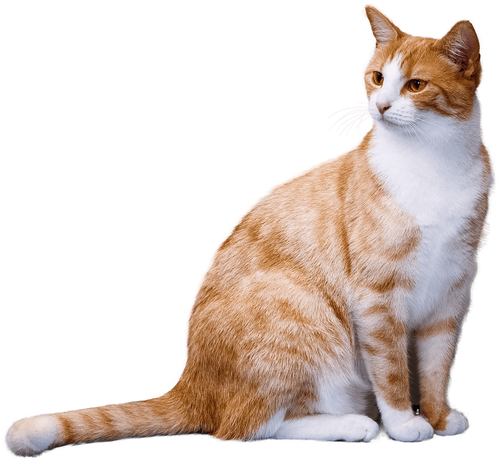

 The cat (Felis catus) is a domestic species of small carnivorous mammal. It is the only domesticated species in the family Felidae and is often referred to as the domestic cat to distinguish it from the wild members of the family. A cat can either be a house cat, a farm cat or a feral cat; the latter ranges freely and avoids human contact. Domestic cats are valued by humans for companionship and their ability to hunt rodents. About 60 cat breeds are recognized by various cat registries.
The origin of the English word 'cat', Old English catt, is thought to be the Late Latin word cattus, which was first used at the beginning of the 6th century. It was suggested that the word 'cattus' is derived from an Egyptian precursor of Coptic ϣⲁⲩ šau, "tomcat", or its feminine form suffixed with -t. The Late Latin word may be derived from another Afro-Asiatic or Nilo-Saharan language. The Nubian word kaddîska "wildcat" and Nobiin kadīs are possible sources or cognates. The Nubian word may be a loan from Arabic قَطّ qaṭṭ ~ قِطّ qiṭṭ. It is "equally likely that the forms might derive from an ancient Germanic word, imported into Latin and thence to Greek and to Syriac and Arabic". The word may be derived from Germanic and Northern European languages, and ultimately be borrowed from Uralic, cf. Northern Sami gáđfi, "female stoat", and Hungarian hölgy, "stoat"; from Proto-Uralic *käďwä, "female (of a furred animal)".
The scientific name Felis catus was proposed by Carl Linnaeus in 1758 for a domestic cat. Felis catus domesticus was proposed by Johann Christian Polycarp Erxleben in 1777. Felis daemon proposed by Konstantin Alekseevich Satunin in 1904 was a black cat from the Transcaucasus, later identified as a domestic cat.